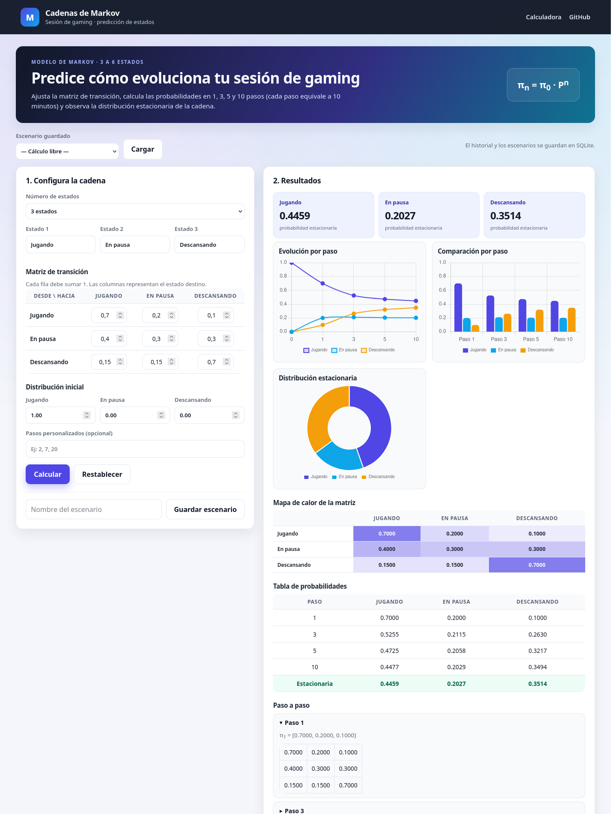

Sesión de gaming · predicción de estados
Modelo de Markov · 3 estados
Esta demo calcula la evolución de una sesión de gaming con estados Jugando, En pausa y Descansando. Cada paso representa 10 minutos. Los resultados se generan con el mismo motor Python que usa la aplicación interactiva.
flask --app wsgi run --debug.

| Desde \ Hacia | Jugando | En pausa | Descansando |
|---|---|---|---|
| Jugando | 0.7000 | 0.2000 | 0.1000 |
| En pausa | 0.4000 | 0.3000 | 0.3000 |
| Descansando | 0.1500 | 0.1500 | 0.7000 |
| Jugando | En pausa | Descansando | |
|---|---|---|---|
| Jugando | 0.7000 | 0.2000 | 0.1000 |
| En pausa | 0.4000 | 0.3000 | 0.3000 |
| Descansando | 0.1500 | 0.1500 | 0.7000 |
A largo plazo, el jugador reparte su tiempo según estos porcentajes.
| Paso | Jugando | En pausa | Descansando |
|---|---|---|---|
| 1 | 0.7000 | 0.2000 | 0.1000 |
| 3 | 0.5255 | 0.2115 | 0.2630 |
| 5 | 0.4725 | 0.2058 | 0.3217 |
| 10 | 0.4477 | 0.2029 | 0.3494 |
| Estacionaria | 0.4459 | 0.2027 | 0.3514 |
Se multiplica la distribución inicial por la matriz de transición elevada al número de pasos: πn = π0 · Pn. La distribución estacionaria satisface πP = π y suma 1. Los pasos requeridos son 1, 3, 5 y 10; la aplicación permite añadir pasos personalizados.